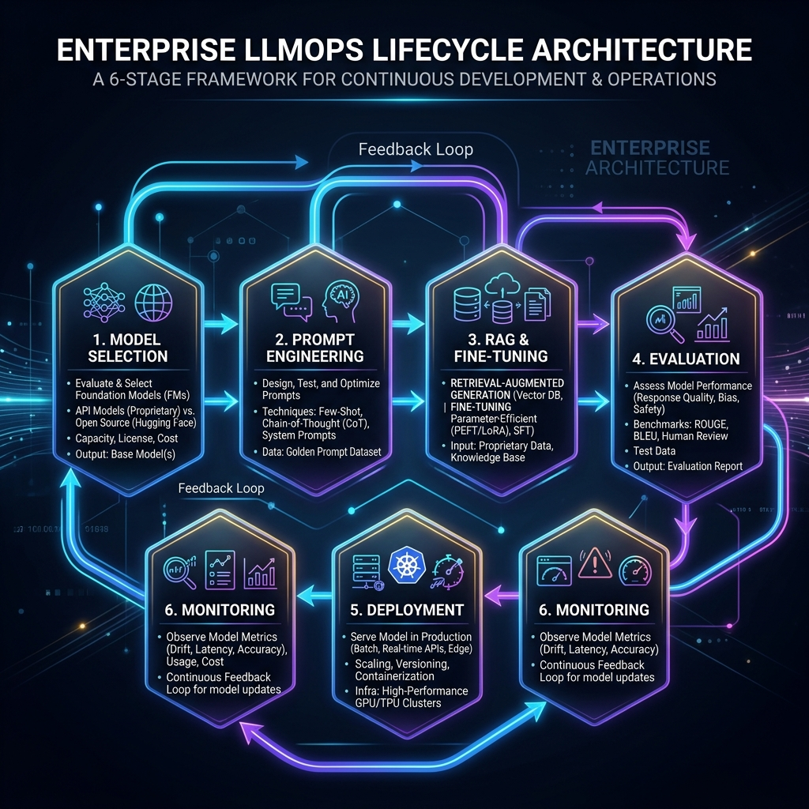
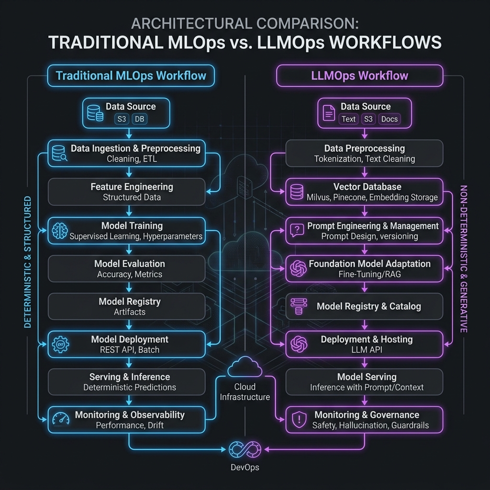
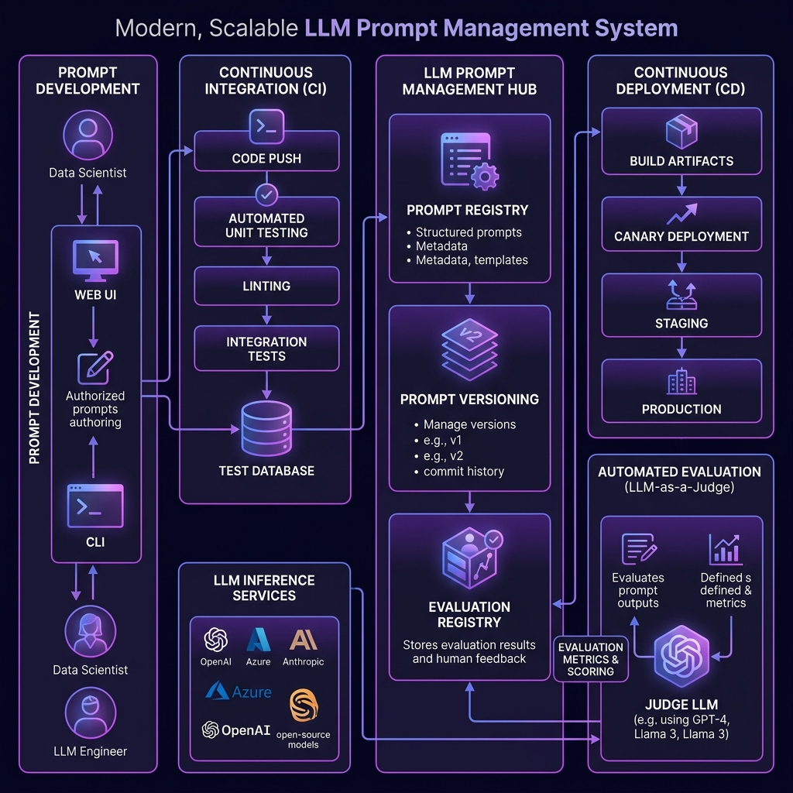
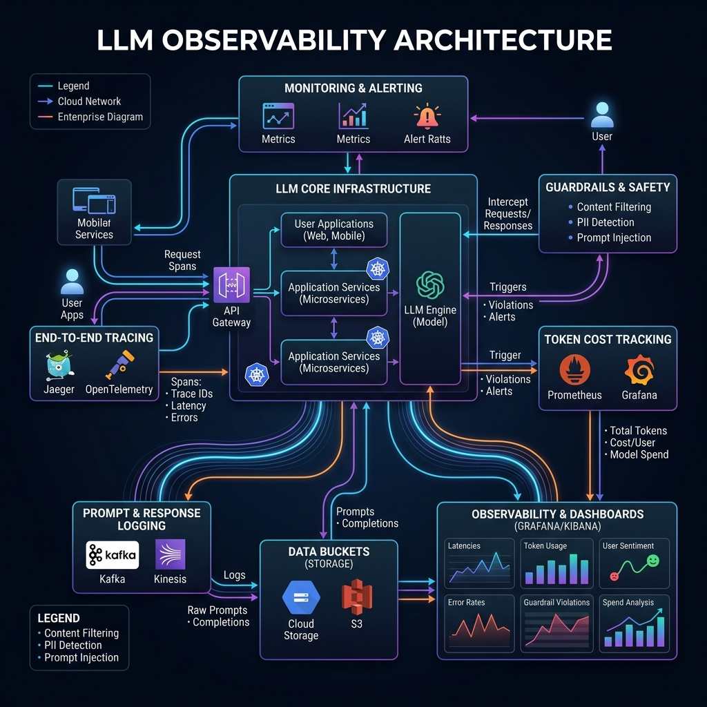
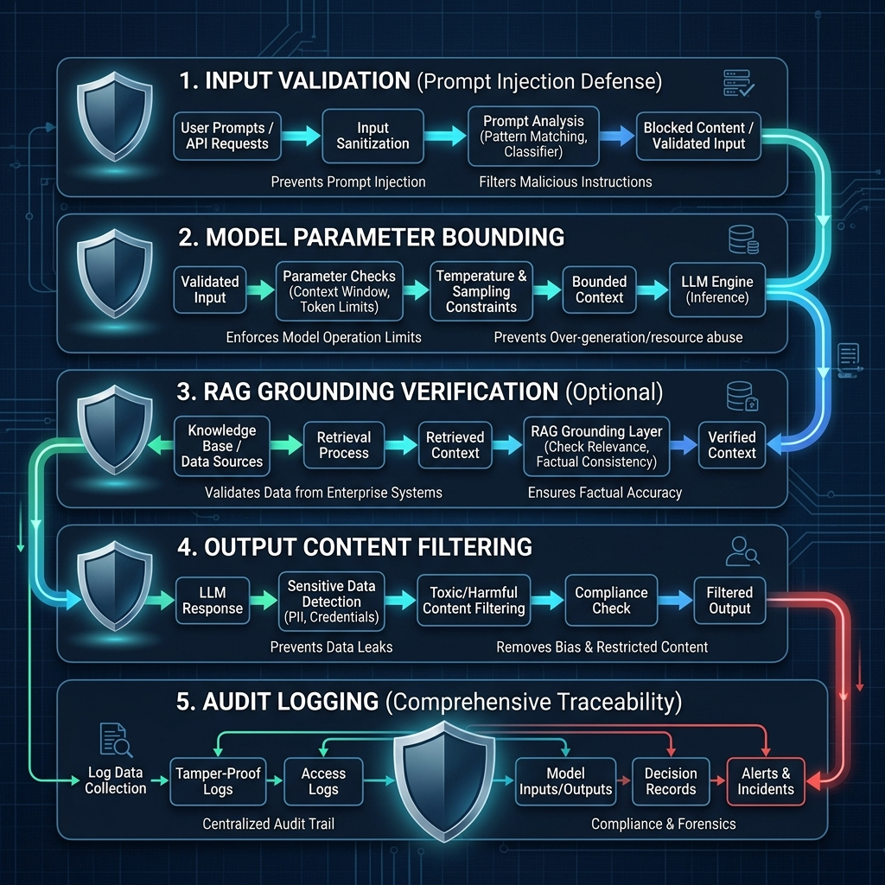

Master LLM lifecycle management, deployment patterns, prompt versioning, observability, cost optimization, and enterprise governance for AI-powered applications.
6Topics
~18Min Read
10Questions

LLMOps Lifecycle — Enterprise Overview
Beginner~3 min
LLMOps Lifecycle
LLMOps is the set of practices, tools, and processes for managing the full lifecycle of Large Language Model applications in production — from model selection to continuous improvement.
The 6-Stage LLMOps Lifecycle
Stage
Description
Tools / Services
1. Model Selection
Choose the right foundation model based on task, cost, latency, and accuracy requirements
Bedrock Model Catalog, Hugging Face, model benchmarks (MMLU, HumanEval)
2. Prompt Engineering
Design, test, and version prompts. Build system instructions, few-shot examples, guardrails
LangSmith, Promptflow, Bedrock Playground
3. RAG / Fine-Tuning
Customize model behavior via retrieval augmentation or parameter-efficient fine-tuning (LoRA, QLoRA)
Bedrock Knowledge Bases, SageMaker, OpenSearch
4. Evaluation
Automated + human evaluation of model outputs before production release
RAGAS, DeepEval, Bedrock Model Evaluation, LLM-as-Judge
5. Deployment
Ship the LLM app with API gateway, rate limiting, caching, and fallback strategies
API Gateway, Lambda, CloudFront, ElastiCache
6. Monitoring & Feedback
Track token usage, latency, error rates, user feedback, and model drift
CloudWatch, LangFuse, Datadog, Bedrock Logging
🎯 Key Takeaway
Interview tip: LLMOps is NOT just MLOps with a new name. Say: "LLMOps focuses on prompt management, evaluation of non-deterministic outputs, token cost optimization, and guardrails — problems that traditional ML pipelines don't have."
Beginner~2 min
LLMOps vs Traditional MLOps

LLMOps shares DNA with MLOps but introduces fundamentally different challenges:
Dimension
Traditional MLOps
LLMOps
Model Training
Train from scratch on your data
Use pre-trained FMs; customize via prompts, RAG, or fine-tuning
Data
Feature stores, labeled datasets
Prompt templates, knowledge bases, vector stores
Versioning
Model weights, training data versions
Prompt versions, RAG index versions, model API versions
Interview tip: The biggest shift is from deterministic to non-deterministic outputs. Say: "In traditional ML, the same input always gives the same prediction. With LLMs, the same prompt can give different responses — which changes how we test, evaluate, and monitor."
Intermediate~3 min
Prompt Management & Versioning

In LLMOps, prompts are code. They need the same rigor as application code — versioning, testing, review, and deployment pipelines.
Enterprise Prompt Management Architecture
Prompt Registry — Centralized store for all prompt templates with version history. Like a Docker registry but for prompts. Tools: LangSmith, PromptLayer, custom DynamoDB-backed store.
Prompt Versioning — Every prompt change is versioned (v1.0, v1.1). Link prompt versions to evaluation results. Roll back to a previous prompt if quality drops.
Prompt Testing — Automated test suites that run against a set of golden examples. Compare new prompt output against expected responses using LLM-as-Judge or embedding similarity.
Prompt CI/CD — PR-based workflow: edit prompt → run eval suite → review results → merge → deploy. Treat prompt changes like code changes.
A/B Testing — Route a percentage of traffic to a new prompt version. Monitor quality metrics and token costs before full rollout.
Prompt Composition Patterns
Pattern
Description
When to Use
System + User
System message sets persona/constraints; user message is the query
Build prompts at runtime by injecting RAG context, user history, tool schemas
Agentic applications, personalized responses
Meta-Prompting
Use an LLM to generate/optimize prompts for another LLM
Automated prompt optimization at scale
🎯 Key Takeaway
Interview tip: Say: "We version prompts in a registry, run automated evals on every change, and use A/B testing before full rollout. A single word change in a prompt can shift output quality dramatically — so we treat prompts with the same rigor as production code."
Intermediate~3 min
LLM Observability & Cost Tracking

LLM observability goes beyond traditional APM. You need to track prompt/response pairs, token consumption, latency per model, and quality over time.
The 4 Pillars of LLM Observability
Pillar
What to Track
Tools
Tracing
End-to-end request flow: user query → RAG retrieval → LLM call → response. Trace each step with latency
LangFuse, LangSmith, AWS X-Ray
Metrics
Token usage (input/output), latency (P50/P95/P99), error rates, cache hit ratio, model availability
Prompt Caching — Cache repeated system prefixes and common prompts. Bedrock supports prompt caching for up to 90% cost reduction on cached portions.
Model Routing — Classify query complexity and route to the cheapest model that meets quality thresholds. Simple FAQ → Haiku ($0.25/M tokens), Complex reasoning → Sonnet ($3/M tokens).
Response Caching — Cache identical or semantically similar queries in ElastiCache/DynamoDB. Use embedding similarity to find near-duplicates.
Batch API — Use Bedrock Batch Inference for non-real-time workloads (reports, bulk processing) at 50% lower cost.
Token Optimization — Shorten prompts, compress RAG context, use structured output (JSON mode) to eliminate verbose responses.
🎯 Key Takeaway
Interview tip: Say: "I'd implement LLM-specific tracing with LangFuse to track end-to-end request flows, log all prompt/response pairs to S3 for audit, and build cost dashboards showing token usage per team, model, and feature. The key metric is cost-per-quality-response, not just cost-per-token."
Advanced~4 min
Guardrails & Enterprise AI Governance

Enterprise LLM applications need multiple layers of safety controls. Guardrails protect against harmful outputs, data leakage, and off-topic responses.
Defense-in-Depth: 5 Layers of LLM Safety
Layer
Protection
Implementation
1. Input Validation
Prompt injection detection, input length limits, PII detection in user queries
Bedrock Guardrails (input filters), custom regex, WAF rules on API Gateway
2. Model-Level
System instructions that constrain behavior, temperature settings, max_tokens limits
System prompts with explicit boundaries, model parameter controls
3. Output Filtering
Content filtering (toxicity, harm), PII redaction in responses, topic denial
Full audit trail of all LLM interactions, access controls, data residency
Bedrock Invocation Logging → S3, CloudTrail, IAM policies, VPC endpoints
Key Threat Vectors (Know These for Interviews)
Prompt Injection — Attacker embeds instructions in user input to override system behavior. Mitigation: input validation, separate system/user message channels, content classifiers.
Data Exfiltration — LLM leaks training data or RAG knowledge base content. Mitigation: output filtering, PII detection, access controls on knowledge bases.
Jailbreaking — User manipulates the model to bypass safety filters. Mitigation: multi-layer guardrails, adversarial testing, behavior monitoring.
Hallucination — Model generates plausible but false information. Mitigation: RAG grounding, citation requirements, confidence thresholds, human-in-the-loop for high-stakes decisions.
Governance Framework
Model Registry — Approved models with risk assessments. Only blessed models can be used in production.
Usage Policies — Per-team token budgets, approved use cases, data classification rules (what data can be sent to which model).
Red Team Testing — Regular adversarial testing of LLM applications before and after deployment.
Incident Response — Playbooks for guardrail failures, model degradation, cost spikes, and safety violations.
🎯 Key Takeaway
Interview tip: Say: "I'd implement defense-in-depth with Bedrock Guardrails for input/output filtering, grounding checks to prevent hallucinations, VPC endpoints for network isolation, and full invocation logging to S3 for audit. The governance layer includes an approved model registry, per-team cost budgets, and quarterly red team exercises."
Advanced
Interview Questions — LLMOps
LLMOps questions test your ability to operationalize AI applications at scale — not just build demos, but run them reliably, safely, and cost-effectively in production.
How does LLMOps differ from traditional MLOps? Your team has experience with SageMaker ML pipelines. What new processes do they need for an LLM-powered application?
Answer Guide
Key differences: prompt management replaces feature engineering, non-deterministic evaluation replaces accuracy metrics, token costs replace compute-hour costs, guardrails replace bias detection. New processes: prompt versioning/registry, LLM-specific evals (groundedness, coherence), token budget tracking, guardrail configuration, and red team testing.
Design a prompt management system for an enterprise with 15 teams building LLM applications. How do you handle versioning, testing, and deployment of prompts?
Answer Guide
Central prompt registry (DynamoDB + S3) with Git-based versioning. Each team owns their prompts but follows a shared standard. PR-based workflow: edit prompt → automated eval suite runs against golden test cases → LLM-as-Judge scoring → review → merge → gradual rollout (canary). Include rollback capability. Store prompt metadata: version, author, eval scores, linked model version.
Your LLM application costs $25,000/month. The CFO says it must be under $10,000. What are your top 5 cost reduction strategies without significantly degrading quality?
Answer Guide
1) Model routing — use smaller model (Haiku) for 70-80% of simple queries. 2) Prompt caching — cache system prefixes. 3) Semantic response caching — cache similar queries in ElastiCache using embedding similarity. 4) Prompt optimization — shorter prompts = fewer tokens. 5) Batch API for non-real-time workloads (50% cheaper). Measure cost-per-quality-response, not just total spend.
How do you evaluate the quality of an LLM application before deploying a new prompt or model version? What metrics do you track and how do you automate the evaluation?
Answer Guide
Metrics: relevance, groundedness, coherence, completeness, toxicity, latency, token cost. Automation: golden test dataset (100+ input/expected-output pairs), LLM-as-Judge (use a stronger model to evaluate), RAGAS for RAG-specific metrics. Run evals in CI pipeline on every prompt change. Gate: new version must score >= current version minus threshold. Human eval for edge cases.
A security team reports that users are successfully performing prompt injection attacks on your customer-facing chatbot. It's leaking internal knowledge base content. How do you fix this?
Answer Guide
Immediate: enable Bedrock Guardrails input filtering for prompt injection patterns, add output filtering to detect leaked internal content. Architecture: separate system/user message channels, use a classifier model to detect malicious intent before sending to the main LLM. Long-term: red team testing, adversarial prompt dataset, rate limiting per user, logging suspicious patterns, access controls on RAG knowledge base segments.
Design an observability stack for an LLM application that processes 50,000 requests/day. What do you monitor, alert on, and how do you detect model degradation?
Answer Guide
Tracing: LangFuse for end-to-end request tracing (query → RAG → LLM → response). Metrics: token usage, P95 latency, error rate, guardrail trigger rate, user feedback score. Alerts: latency spike >3s, error rate >5%, cost exceeding daily budget, guardrail trigger spike. Degradation detection: daily automated eval against golden dataset, track user thumbs-down trend, embedding drift on RAG queries. Log all prompt/response pairs to S3 (PII-redacted).
Your company wants to use LLMs but is in a regulated industry (banking). The compliance team requires full audit trails and data residency. How do you architect this?
Answer Guide
Bedrock with VPC endpoints (no public internet). Enable Model Invocation Logging → S3 (encrypted with KMS, lifecycle policies for retention). IAM policies restricting which models and features each team can access. Bedrock Guardrails for PII detection/redaction on input and output. Data residency: select Bedrock region matching compliance requirements. CloudTrail for API-level audit. Approved model registry — only compliant models allowed. Regular compliance reports from logged data.
Anthropic releases a new Claude model version. How do you safely migrate your production application from the current model version to the new one?
Answer Guide
Never swap models in production without testing. Steps: 1) Run full eval suite against new model with existing prompts. 2) Compare quality scores, latency, and cost vs current model. 3) Check if prompts need adjustment for new model behavior. 4) Shadow mode: run both models in parallel, compare outputs. 5) Canary deployment: route 5% of traffic to new model, monitor quality/cost. 6) Gradual rollout with automatic rollback on quality regression.
Design a multi-model LLMOps architecture where you use different models for different tasks. How do you manage the complexity of multiple models, prompts, and evaluations?
Answer Guide
Model routing layer (Lambda + Step Functions): classify intent → route to optimal model. Prompt registry: separate prompt templates per model (each model responds differently to the same prompt). Per-model eval suites: each model has its own golden test dataset. Unified observability: single dashboard tracking cost, quality, latency across all models. Fallback chains: primary model → secondary → tertiary. Config-driven: model selection rules in DynamoDB, changeable without code deploy.
What does a production-ready LLM CI/CD pipeline look like? Walk through the stages from code commit to production deployment for an LLM-powered application.
Answer Guide
Stages: 1) Code lint + unit tests. 2) Prompt eval suite — run changed prompts against golden dataset, LLM-as-Judge scoring. 3) Integration tests — end-to-end with RAG, guardrails, caching. 4) Security scan — prompt injection test suite, PII leak detection. 5) Cost estimation — calculate expected token cost delta. 6) Staging deployment with shadow mode. 7) Canary to production (5% → 25% → 100%). Gate: quality score must be >= current baseline. Automated rollback on quality regression or cost spike.
Preparation Strategy
LLMOps interviews test production maturity with AI systems. Show that you understand the unique challenges of LLMs: non-deterministic outputs, token economics, prompt drift, safety risks, and the need for continuous evaluation. Don't just describe tools — explain your operational philosophy for running AI reliably at scale.